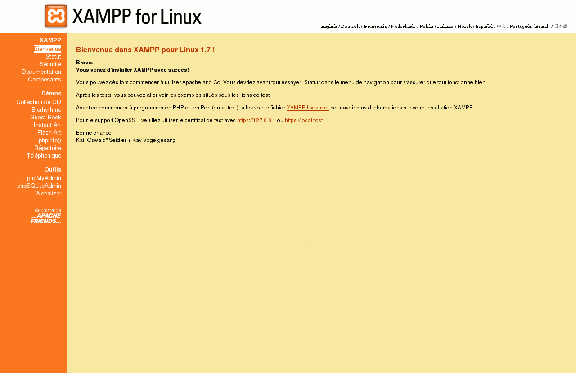

Vous avez appris le xHTML : très bien ; le CSS : très bien aussi ; vous voulez apprendre le PHP, encore mieux.
Mais voilà, vous avez un problème : vous êtes sous Ubuntu et vous ne savez pas comment installer un serveur en local comme Wampp sous Windows. Vous êtes donc au bon endroit. Vous apprendrez ici à installer, configurer et utiliser Xampp.
Xampp signifie X Apache MySQL Perl PHP comme Wampp signifie Windows Apache MySQL Perl PHP.
Je sais que pour vous ça ne veut pas dire grand chose ( :p ) mais, grâce au nom, on peut comprendre qu'il sert à utiliser les langages Apache, Perl et PHP mais aussi à stocker des données sous forme de bases de données grâce à MySQL.
Il va vous servir à installer un serveur de développement en PHP sur votre ordinateur.
Xampp n'est en fait qu'un regroupement de différents logiciels indispensables au bon fonctionnement d'un serveur.
De plus, il est entièrement gratuit et se veut facilement installable sous Linux. Pour le télécharger, allez ici puis choisissez la dernière version (qui est, à l'heure où j'écris ces lignes, la version 1.7).
Il s'agit surtout de supprimer apache et php et avec comme nom de paquet (pour l'instant) apache2 et php5. En effet, ces paquets utilisent le port 80 qui va être utilisé pour Xampp.
Avant de lancer l'installation, et pour les systèmes 64 bits, il faut installer une librairie pour que ce logiciel puisse fonctionner : ia32-libs. Donc, selon votre gestionnaire de paquets (pour moi c'est apt), faites :
sudo apt-get install ia32-libs
Vous avez bien récupéré l'archive, et installé ia32-libs si besoin ? Bien, on peut y aller. :pirate:
Ouvrez la console puis placez-vous à l'endroit où votre archive a été téléchargée avant de décompresser, sinon vous aurez droit à une jolie erreur :-° .
Vous y êtes ? Bien.
Ensuite, entrez dans la console la commande suivante :
sudo tar xvfz ./xampp-linux-*.tar.gz -C /opt
Une petite explication de cette ligne est exigée (sans pour autant vous faire un cours, M@teo21 explique très bien cela dans son tutoriel).
sudo : il faut être en root pour pouvoir exécuter cette commande car l'archive sera décompressée dans le dossier /opt qui est interdit d'écriture pour les simples utilisateurs.
tar : le programme qui permet de gérer les archives tar ou tar.gz (comme ici).
x : extrait l'archive.
v : montre ce qu'il fait (vous verrez par vous-même si vous l'activez).
f : utilise le fichier donné en paramètre.
z : prend en charge le type d'archive gzip (qui est utilisé ici).
-C : redirige l'extraction de l'archive vers le dossier donné en paramètre après.
Xampp est maintenant installé.
Pour le lancer il faut entrer sudo /opt/lampp/lampp start. Cette commande est un peu longue, si vous voulez la raccourcir, allez plus bas dans le tutoriel (plus précisément dans la partie « Quelques manipulations utiles »).
Xampp embarque à son bord un utilitaire pour sécuriser ses pages. Si vous avez suivi vos cours d'anglais depuis la sixième, ça ne devrait pas vous poser de problèmes. :-°
Pour le lancer, il suffit de faire sudo /opt/lampp/lampp security.
Il vous pose tout d'abord une première question :
La sécurisation des pages
XAMPP: Your XAMPP pages are NOT secured by a password.
XAMPP: Do you want to set a password? [yes]
Si vous entrez « yes », votre dossier « xampp » sera sécurisé au moyen d'un htaccess (M@teo21 en parle dans son tutoriel sur le PHP). En effet, que vous passiez par l'adresse locale ou par Internet (via votre adresse IP), vous serez automatiquement redirigé sur ce dossier. Je vous conseille donc fortement d'accepter.
Vous pouvez obtenir votre adresse IP en entrant comme commande ifconfig. C'est cette ligne qui nous intéresse :
inet adr:votre IP Bcast:votre IP Masque:votre IP
Dans le navigateur, entrez l'IP que vous obtenez au niveau de « inet adr: » et vous verrez, vous arrivez sur la page de Xampp. Une petite précision cependant : l'IP que vous venez d'entrer est celle de votre réseau local. Je m'explique : si vous êtes en réseau local par l'intermédiaire d'une box, votre box distribue à chaque ordinateur du réseau une adresse IP locale et UNIQUEMENT utilisable par les ordinateurs connectés sur la même box que vous (ce qui comprend les ordinateurs câblés autant que ceux non-câblés).
Pour que votre site (qui pour le moment tourne en local) puisse être vu à partir d'Internet, il faut que vous ouvriez des ports (nan pas de pêche :p ) mais ça, inutile de me demander, je ne sais pas le faire :-° .Tout ce que je sais c'est que c'est différent pour chaque box. Donc ce qui suit est encore plus important si vous ouvrez des ports.
Si vous avez entré « yes » à la question, il vous demandera un mot de passe. Si vous avez entré « no », tout le monde pourra accéder à votre dossier « xampp ».
Vous n'avez qu'à tester, lancez Xampp (sudo /opt/lampp/lampp start) sans lancer le programme de sécurisation ; vous verrez que, par votre adresse IP, vous pouvez accéder à tout ce que vous voulez. Pour arrêter Xampp, faites sudo /opt/lampp/lampp stop.
Qu'est-ce que ça fait qu'on puisse accéder au dossier ? Je trouve que ça pourrait être intéressant si une personne que je connais pouvait accéder à des fichiers que je voudrais partager.
Si une personne voit ce dossier, il ou elle peut accéder à vos bases de données si vous ne les avez pas sécurisées. Pour les sécuriser, lisez la suite. Il ou elle peut également tout savoir sur votre serveur via le menu phpinfo ou encore avoir les statistiques de votre site par webalizer.
On continue !
Sécurisation de MySQL
XAMPP: MySQL is accessable via network.
XAMPP: Normaly that's not recommended. Do you want me to turn it off? [yes]
Ici, il vous informe que MySQL est accessible depuis Internet, ce qui veut dire que les personnes qui connaissent votre adresse IP peuvent accéder à vos bases de données. Je vous conseille de donner « yes » comme réponse à cette question pour éviter cela.
Puis viennent les questions pour la sécurisation de phpMyAdmin.
Sécurisation de phpMyAdmin
XAMPP: The MySQL/phpMyAdmin user pma has no password set!!!
XAMPP: Do you want to set a password? [yes]
Là, le programme vous demande si vous voulez mettre un mot de passe à l'utilisateur root de phpMyAdmin. En effet, celui-ci sauvegarde vos préférences dans une base de données MySQL. Ces bases de données sont celles qui sont déjà présentes lors de votre première connexion. Pour accéder à ces données, phpMyAdmin utilise un utilisateur spécial pma (phpMyAdmin). Pour éviter tout problème de sécurité, je vous conseille d'en mettre un.
Puis, si vous répondez « yes », il vous demandera le mot de passe. Vient alors la question de sécurisation de MySQL.
Re-sécurisation de MySQL
XAMPP: MySQL has no root passwort set!!!
XAMPP: Do you want to set a password? [yes]
Je vous conseille de répondre « yes » puis de choisir un mot de passe compliqué à trouver.
Nouvelle question !
Le FTP de Xampp
The FTP password is still set to ####.
XAMPP: Do you want to change the password? [yes]
Il vous demande ici le mot de passe pour accéder au serveur FTP. Je vous conseille d'en mettre un car grâce à cela, on peut accéder à toutes vos pages. Si vous n'en mettez pas, le login par défaut est « nobody » et le mot de passe est donné à la place de #### dans ma citation de la console.
Enfin, après avoir installé et sécurisé Xampp, il est enfin prêt à être utilisé.
Pour accéder à vos pages, allez dans votre navigateur et tapez « localhost » dans la barre d'adresse.
Et là, surprise, vous tombez sur une page autre que celle que vous pourriez trouver sous Windows (si vous avez déjà utilisé Wampp sous Windows ou alors regardé les screenshot du tutoriel de M@teo21 sur le PHP).

Page d'accueil
Cette page est très pratique car elle réunit toutes les informations dont vous avez besoin sur le serveur. Je vais expliquer certaines entrées du menu (pas toutes, il y en a beaucoup que je n'utilise pas).
Statut correspond aux programmes lancés et ceux qui fonctionnent.
Sécurité correspond à la sécurisation de Xampp que vous avez vue dans la partie précédente. Si vous voyez encore quelques lignes non-sécurisées et que vous êtes inquiet, relancez tout simplement le programme de sécurisation de Xampp.
Documentation réunit toutes les documentations sur les langages qu'il est possible d'utiliser avec Xampp. Il y a également à disposition des tutoriels mais je ne connais pas leur qualité car je ne les ai jamais lus.
Composants contient les noms de tous les programmes réunis dans Xampp ainsi que les liens vers les sites officiels.
... Je passe quelques entrées. ...
phpinfo est la page contenant la fonction <?php phpinfo(); ?> . Cette fonction sert à connaître quelles extensions sont activées et contient toutes les informations sur le serveur.
Ensuite, dans le sous-menu « Outils », vous pouvez voir les liens vers phpMyAdmin, phpSQLiteAdmin et webalizer.
phpMyAdmin permet de gérer ses bases de données graphiquement. phpSQLiteAdmin est un programme similaire à phpMyAdmin mais en plus léger et plus rapide. Une précision supplémentaire pour ces deux logiciels : ils utilisent deux gestionnaires pour le stockage différents : phpMyAdmin utilise MySQL comme BDD et phpSQLiteAdmin utilise... SQLite. Ce sont deux formes de stockage sous forme de base de données différentes.
Webalizer est un créateur de statistiques pour votre site. S'il n'est pas sur Internet, cette entrée n'est pas très importante mais peut quand même vous servir.
Pouvoir utiliser un autre répertoire
Pour utiliser un autre répertoire, il vous suffit de créer un nouveau dossier à la racine du dossier /opt/lampp/htdocs. Je l'ai appelé www. NOTA : pour le créer, il vous faut être en root donc sudo mkdir /opt/lampp/htdocs/www.
Ensuite, essayez dans votre navigateur localhost/www et là ça fonctionne, vous pouvez donc placer vos fichiers dans ce dossier.
Mais voilà, vous voilà en face d'un beau problème : le dossier /opt/lampp/htdocs/www est en root donc le simple mortel ( :ange: ) que vous êtes ne pourra pas le modifier.
Une seule solution, la manifestation :-° changer le chmod du dossier. Le chmod est l'ensemble des droits que possèdent les utilisateurs sur le dossier. Pour ce faire, entrer sudo chmod 777 /opt/lampp/htdocs/www.
777 signifie que tous les utilisateurs pourront tout faire dans ce dossier mais nulle part ailleurs. Si vous voulez mettre un autre droit, je vous conseille d'apprendre les droits grâce au tuto de M@teo21 sur Linux.
Voilà donc un problème de réglé.
phpMyAdmin
Pour accéder à phpMyAdmin, tapez tout simplement localhost/phpmyadmin dans la barre d'adresse du navigateur. Vous pouvez également y accéder par le menu de la page d'accueil de Xampp
La partie suivante concerne quelques manipulations bien pratiques de Xampp.
Vous l'avez sans doute remarqué, la commande pour démarrer Xampp est longue.
Nous allons donc la changer pour la remplacer par lampp.
Pour ce faire, nous allons créer un lien symbolique dans le répertoire où sont installées les autres commandes.
Tapez dans un terminal sudo ln -s /opt/lampp/lampp /usr/bin/lampp.
Et voilà !
Faire un lien vers www
Ici, nous allons voir comment accéder directement au répertoire www que nous avons créé dans la partie précédente (celui dans lequel vous allez mettre vos pages).
Placez-vous dans votre dossier personnel puis entrez cette commande :